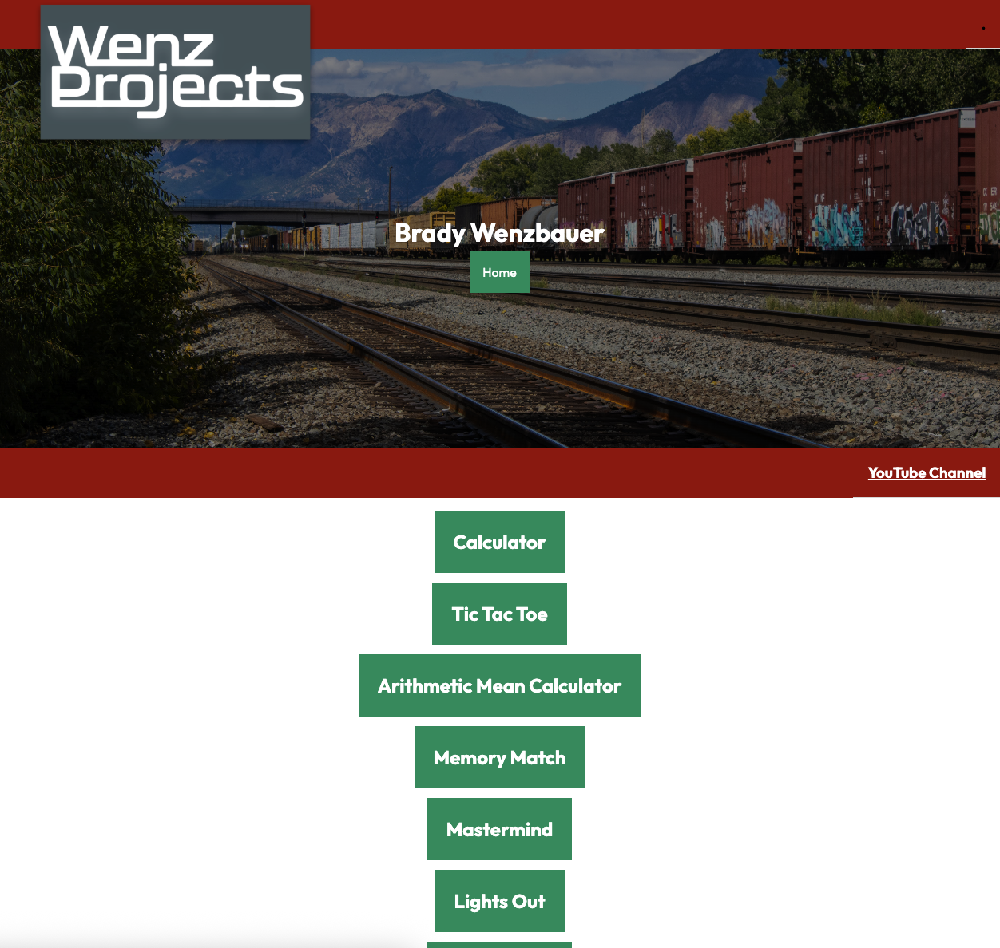

Programming Site
Created as a Weber State University project, focusing on programming tutorials and coding demonstrations.

Process
Developed layout, structured tutorials, and styled code examples for clarity and readability.
Tools Used
- HTML, CSS, JavaScript
Accessibility Statement
This project includes accessibility-aware development practices such as semantic HTML structure, readable code formatting, and descriptive alt text for images. The layout is designed to support clarity and usability for users learning programming concepts. However, additional improvements could include enhanced keyboard navigation support, ARIA roles for interactive components, and further testing with screen readers to ensure full accessibility compliance.